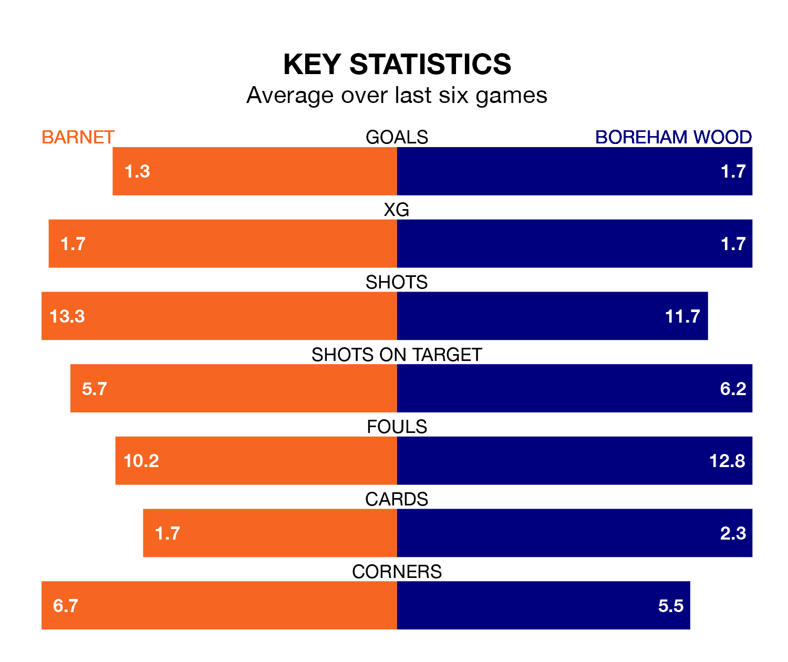

Barnet face Boreham Wood at the Hive Stadium on Saturday looking to secure a first win in six National League games.
The Bees have lost four and drawn one matches since they last earned three points – against Oxford City on October 28.
They face a Boreham Wood side who have won two and drawn one over that time.
With 44 goals in 23 games so far this season, Barnet are the league's third-highest scorers with 1.9 goals per game. But they are conceding more than average too, letting in 36 goals at a rate of 1.6 per game.
Boreham Wood, meanwhile, are below average scorers, with 1.3 goals per game, compared to a league average of 1.5. They have conceded 1.4 goals per game.
The Bees are third in the table after 23 games, of which they have won 13 and drawn four, earning 43 points.
The Wood are 12 places behind the hosts in 15th, with six wins and nine draws putting them on 27 points.
In Nicke Kabamba, Barnet have one of the league's sharpest shooters so far this season. He has notched 13 goals in 23 appearances, to sit second in the scoring charts.
His goal rate of one every 150 minutes is much quicker than that of Tyrone Kallum Marsh, the away side's top scorer with a goal every 315 minutes, and a total of six goals in 23 games.
In the last three years, Barnet and Boreham Wood have played each other on 10 occasions. Barnet won three of them, Boreham Wood four, and they drew three times.
On average, the Bees scored 0.8 goals and the Wood 1.1 in those matches.
Their last meeting was on September 2, when Barnet won 1-0 away.
Barnet's last match was on Saturday, a 1-1 draw against Ebbsfleet United, with Kabamba getting the goal for the Bees.
Boreham Wood beat Oxford City 2-1 last time out, also on December 16, with Marsh and Tom Whelan on the scoresheet.
Updated: 15:16, 21/12/23